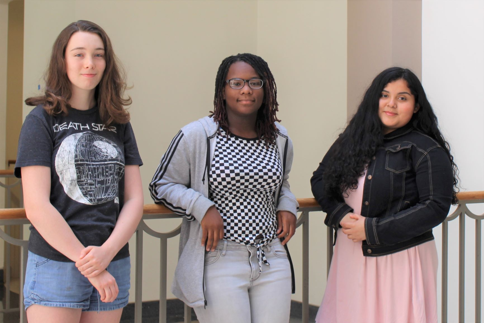

about fashion cay
Our website was made as the final project for Girls Who Code Software.org/ Georgetown Law
Summer Immersion Program in August 2019. The name "Phashion Cay" comes from the word fashion
and our names; Catherine, Alaysha, and Yeira.
For our website, we used HTML, CSS, and Javascript,
and hosted it using GitHub pages.
We used W3Schools a lot for coding reference.
We used Trello for project management.
The website was made without a template and uses the "Great Vibes" font from google fonts
for headings, and Verdana font for text.
The style quiz and size calculators both use Javascript and were made without templates.
The store options map uses an embedded custom Google map.
Size information and pictures are from the H&M website sizeguide.

Yeira
Helloooooooooooooo my name is Yeira
and hope you are enjoying our website. some of the
key features that I work on was the quiz, logo, and
finding the stores. I want to take this opportunity to
bring awareness to SAVING THE TURTLES and provide a
link if you feel in your heart to donate.
https://www.save-a-turtle.org/donate.html
Alaysha
My name is Alaysha I'm 15 years old and
I want to be a game developer when I get older.
On the Phasion Cay website I coded the survey and
created the map for the styles. My interests are
games, coding, and editing I'm glad I got the
opportunity to work on this project with Catherine
and Yeira.
Catherine
During this project, I worked on the stylesheets and general
styling of the website and put it on GitHub pages. I also made the size calculator with
Javascript and took the pictures for our about page. I like
to do photography, be with my dog, listen to music, and hang
with my friends. In college I will probably study some
type of engineering.